Kernels for Gaussian Processes
This post takes an extensive look at kernels and discusses the rationales, utility, and limitations of some popular kernels, focusing primarily on their application in Gaussian processes and Bayesian optimisation. Along with the discussion are implementations of the kernels in base R.
library(ggplot2)
library(magrittr)
set.seed(4444)Kernels, also known as covariance functions, are central to Gaussian processes and other machine learning methods where they provide the main means of implementing prior knowledge about the modelled process.
Intuitively, kernels quantify how similar two points are, given just their position in input space. The kernel function determines the smoothness and complexity of the resulting Gaussian process model, and it controls how much weight is given to different regions of the input space. Different types of kernel functions can be used to model different types of data, such as periodic or spatial data.
Bayesian optimisation extensively employs Gaussian processes, so kernels provide the means to define a bespoke prior distribution over the objective function or process being optimised. There are a plethora of kernels available, and for successful implementations of Bayesian optimisation, selecting the right one is essential but difficult.
Applying Kernels in Gaussian Processes
Formally, a kernel function k(\mathbf{x},\mathbf{x'}) takes two input vectors, \mathbf{x} and \mathbf{x'}, and returns a real-valued scalar that represents a similarity measure between the inputs.
A kernel function must be positive semi-definite (PSD). This means that the kernel matrix, \mathbf{\Sigma}, constructed from any set of n input row vectors {\mathbf{x}_1, \ldots, \mathbf{x}_n}, must be PSD. The entries of the kernel matrix are defined as \mathbf{\Sigma}_{i,j} = k(\mathbf{x}_i, \mathbf{x}_j), for all combinations of i, j \in (1, \ldots, n). The PSD property ensures that the kernel matrix can be applied as the covariance matrix in a Gaussian process.
In the context of a Gaussian process that should approximate an objective function, a good kernel function should be flexible enough to capture the underlying structure of the data, but not so flexible that it overfits the data. The choice of kernel function and its hyperparameters can have a significant impact on the performance of the Gaussian process and its application in Bayesian optimisation, so it is important to choose carefully and experiment with different options.
However, without knowing the virtues, pitfalls, and assumptions of a kernel, it is difficult to assess its quality for a given problem. In the following sections, a selection of kernels and their virtues are discussed.
To demonstrate the kernels, two plots are defined. The first plot simply draws the kernel function as a function of Euclidean distance.
Show the code
plot_kernel_value <- function(kernel, ...) {
tibble::tibble(
X1 = seq(0, 5, by = 0.05),
X2 = rep(0, length(X1)),
kv = purrr::map2_dbl(X1, X2, kernel, ...)
) %>%
ggplot(aes(x = X1, y = kv)) +
geom_line() +
labs(x = "Euclidean distance", y = "kernel value") +
theme_minimal()
}The next plot samples from the Gaussian process that uses the kernel function to calculate its covariance matrix. This essentially translates to sampling random functions from the Gaussian process. See the post on Bayesian optimisation for details.
Show the code
#' Random Samples from a Multivariate Gaussian
#'
#' This implementation is similar to MASS::mvrnorm, but uses chlosky
#' decomposition instead. This should be more stable but is less efficient than
#' the MASS implementation, which recycles the eigen decomposition for the
#' sampling part.
#'
#' @param n number of samples to sample
#' @param mu the mean of each input dimension
#' @param sigma the covariance matrix
#' @param epsilon numerical tolerance added to the diagonal of the covariance
#' matrix. This is necessary for the Cholesky decomposition, in some cases.
#'
#' @return numerical vector of n samples
rmvnorm <- function(n = 1, mu, sigma, epsilon = 1e-6) {
p <- length(mu)
if(!all(dim(sigma) == c(p, p))) stop("incompatible dimensions of arguments")
ev <- eigen(sigma, symmetric = TRUE)$values
if(!all(ev >= -epsilon * abs(ev[1L]))) {
stop("The covariance matrix (sigma) is not positive definite")
}
cholesky <- chol(sigma + diag(p) * epsilon)
sample <- rnorm(p*n, 0, 1)
dim(sample) <- c(n, p)
sweep(sample %*% cholesky, 2, mu, FUN = `+`)
}
plot_gp <- function(kernel, ...) {
n_samples <- 5
X_predict <- matrix(seq(-5, 5, length.out = 100), 100, 1)
mu <- rep(0, times = length(X_predict))
sigma <- rlang::exec(kernel, X1 = X_predict, X2 = X_predict, ...)
samples <- rmvnorm(n = n_samples, mu, sigma)
p <- tibble::as_tibble(
t(samples),
.name_repair = ~ paste("sample", seq(1, n_samples))
) %>%
dplyr::mutate(
x = X_predict,
uncertainty = 1.6*sqrt(diag(sigma)),
mu = mu,
lower = mu - uncertainty,
upper = mu + uncertainty
) %>%
ggplot(aes(x = x)) +
geom_ribbon(
aes(ymin = lower, ymax = upper, fill = "89% interval"),
alpha = 0.2
) +
geom_line(aes(y = mu, colour = "Mean")) +
theme_minimal() +
labs(
y = "y",
x = "x",
colour = "",
fill = ""
) +
theme(panel.grid = element_blank())
Reduce(
`+`,
init = p,
x = lapply(paste("sample", seq(1, n_samples)), function(s) {
geom_line(aes(y = .data[[s]], colour = s), linetype = 2)
})
) +
scale_colour_brewer(palette = "YlGnBu") +
scale_fill_manual(values = list("89% interval" = "#219ebc"))
}Stationary Kernels
Stationary kernels are a class of kernel functions that are invariant to translations in input space. Mathematically, a kernel function is stationary if it depends only on the difference between its arguments, \mathbf{x}-\mathbf{x'}, and not on their absolute values. Formally, a kernel function k(\mathbf{x}, \mathbf{x'}) is stationary if and only if:
k(\mathbf{x}, \mathbf{x'}) = k(\mathbf{x} + a, \mathbf{x'} + a)
for all inputs \mathbf{x} and \mathbf{x'} and all a.
RBF Kernel
The Radial Basis Function (RBF) kernel is also known as the Squared Exponential kernel or the Gaussian kernel. It is a popular choice in Gaussian processes because of its simplicity and interpretability. The RBF kernel is defined as
k(\mathbf{x}, \mathbf{x'}) = \sigma^2 \exp\left(-\frac{\lVert \mathbf{x} - \mathbf{x'}\rVert^2}{2l^2}\right)
where \lVert \mathbf{x} - \mathbf{x'}\rVert^2 is the squared Euclidean distance between the two vectors. \sigma^2 is a variance parameter that simply scales the kernel. More interestingly, the length scale parameter, l, controls the smoothness and the range of influence of the kernel. It determines how quickly the similarity between two input points decreases as their distance increases.
Intuitively, small length scales mean that two points have to be very close to have any correlation. This results in very flexible functions that do not expect much correlation between data points. For a large length scale, however, points that are far apart are still expected to behave in a similar way. This results in very smooth functions that expect similar output values across the entire feature space.
The flexibility and interpretability of the length scale parameter makes the RBF kernel a good starting point, when exploring Gaussian processes.
#' RBF Kernel
#'
#' Isotropic RBF kernel function generalised to two sets of n and m observations
#' of d features.
#'
#' @param X1 matrix of dimensions (n, d). Vectors are coerced to (1, d).
#' @param X2 matrix of dimensions (m, d). Vectors are coerced to (1, d).
#' @param sigma scale parameter, scalar
#' @param l length scale, scalar
#'
#' @return kernel matrix of dimensions (n, m)
rbf_kernel <- function(X1, X2, sigma = 1.0, l = 1.0) {
if (is.null(dim(X1))) dim(X1) <- c(1, length(X1))
if (is.null(dim(X2))) dim(X2) <- c(1, length(X2))
sqdist <- (- 2*(X1 %*% t(X2))) %>%
add(rowSums(X1**2, dims = 1)) %>%
sweep(2, rowSums(X2**2, dims = 1), `+`)
sigma**2 * exp(-0.5 / l**2 * sqdist)
}Here is an example of how the covariance between two vectors tapers off, as their Euclidean distance increases.
plot_kernel_value(rbf_kernel)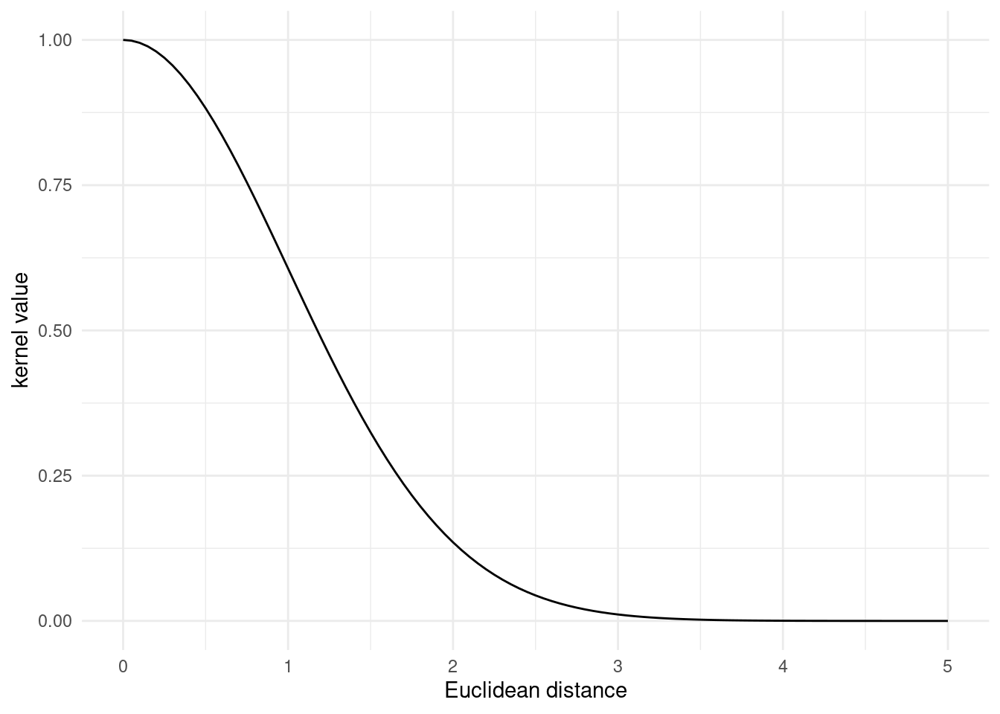
Random functions pulled from a Gaussian process that employs the RBF kernel are quite flexible.
plot_gp(rbf_kernel)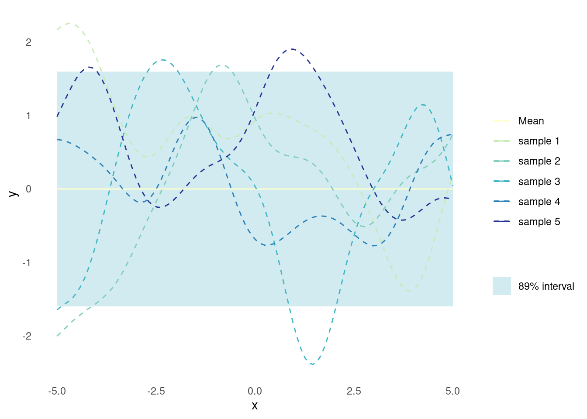
RQ Kernel
The Rational Quadratic (RQ) kernel is a generalisation of the RBF kernel in the sense that it can be interpreted as an infinite sum of RBF kernels with different length scales. The RQ kernel is defined as:
k(\mathbf{x}, \mathbf{x'}) = \sigma^2\left(1 + \frac{\Vert x - x'\Vert^2}{2\alpha \ell^2}\right)^{-\alpha}
where \lVert \mathbf{x} - \mathbf{x'}\rVert^2 is the squared Euclidean distance between the two vectors. \sigma^2 is a variance parameter that simply scales the kernel. The length scale parameter, l, determines how quickly the similarity between two input points decreases as their distance increases, just like for the RBF kernel. The mixture parameter, \alpha, can be viewed as controlling how much local variation the kernel allows. When drawing functions from a Gaussian process that employs the RQ kernel, small values of \alpha will yield functions with more local variation while still displaying the overall length scaling defined by l. On the other hand, larger values of \alpha will yield functions with less local variation. In fact as \alpha \to \infty the RQ kernel converges to the RBF kernel with the same l.
Since the RQ Kernel can model functions with a mixture of different length scales, it is useful for problems where the function may have both local and global variations. However, the RQ kernel needs tuning of two hyperparameters, \alpha and l, which in turn requires more data. The addition of \alpha also arguably decreases the interpretability of l.
The added flexibility compared to the RBF kernel without too much added complexity, makes the RQ kernel a good alternative, when exploring Gaussian processes.
#' RQ Kernel
#'
#' Isotropic RQ kernel function generalised to two sets of n and m observations
#' of d features.
#'
#' @param X1 matrix of dimensions (n, d). Vectors are coerced to (1, d).
#' @param X2 matrix of dimensions (m, d). Vectors are coerced to (1, d).
#' @param sigma scale parameter, scalar
#' @param l length scale, scalar
#' @param alpha mixture parameter, positive scalar
#'
#' @return kernel matrix of dimensions (n, m)
rq_kernel <- function(X1, X2, sigma = 1, l = 1, alpha = 1) {
if (is.null(dim(X1))) dim(X1) <- c(1, length(X1))
if (is.null(dim(X2))) dim(X2) <- c(1, length(X2))
sqdist <- (- 2*(X1 %*% t(X2))) %>%
add(rowSums(X1**2, dims = 1)) %>%
sweep(2, rowSums(X2**2, dims = 1), `+`)
sigma^2 * (1 + sqdist / (2 * alpha * l^2))^(-alpha)
}Here is an example of how the covariance between two vectors tapers off, as their Euclidean distance increases.
plot_kernel_value(rq_kernel, alpha = 0.5, l = 0.5)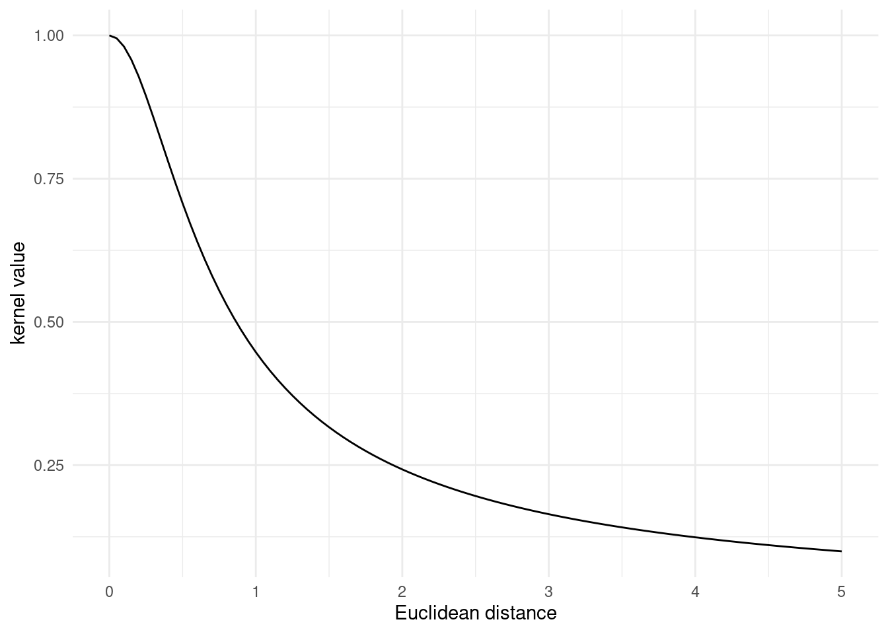
The emphasis on local variation yields functions which are much more flexible.
plot_gp(rq_kernel, alpha = 0.5, l = 0.5)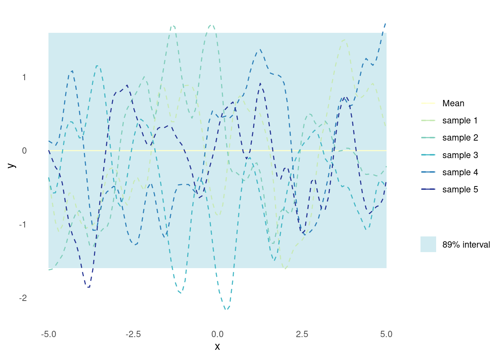
Exponential Kernel
The RBF and RQ kernels represent smooth kernels, i.e. kernels that are differentiable and, when applied in Gaussian processes, yield functions that are less prone to abrupt changes. The exponential kernel, on the other hand, is not differentiable. The exponential kernel is defined as
k(\mathbf{x}, \mathbf{x'}) = \sigma^2 \exp\left(-\frac{\lVert \mathbf{x} - \mathbf{x'}\rVert}{l}\right)
where \lVert \mathbf{x} - \mathbf{x'}\rVert is the Euclidean distance between the two vectors. \sigma^2 is a variance parameter that simply scales the kernel. The length scale parameter, l, determines how quickly the similarity between two input points decreases as their distance increases, just like for the RBF kernel.
When applied in Gaussian processes, the exponential kernel yields functions that are much less smooth compared to the RBF kernel. This is useful when trying to model functions that exhibit abrupt changes.
#' Exponential Kernel
#'
#' Isotropic exponential kernel function generalised to two sets of n and m
#' observations of d features.
#'
#' @param X1 matrix of dimensions (n, d). Vectors are coerced to (1, d).
#' @param X2 matrix of dimensions (m, d). Vectors are coerced to (1, d).
#' @param sigma scale parameter, scalar
#' @param l length scale, scalar
#'
#' @return kernel matrix of dimensions (n, m)
exponential_kernel <- function(X1, X2, sigma = 1, l = 1) {
if (is.null(dim(X1))) dim(X1) <- c(1, length(X1))
if (is.null(dim(X2))) dim(X2) <- c(1, length(X2))
distance <- (- 2*(X1 %*% t(X2))) %>%
add(rowSums(X1**2, dims = 1)) %>%
sweep(2, rowSums(X2**2, dims = 1), `+`) %>%
sqrt()
sigma^2 * exp(-distance / l)
}Here is an example of of the covariance tapers off between two vectors, as their Euclidean distance increases. Notice the abrupt decline in covariance.
plot_kernel_value(exponential_kernel, l = 1)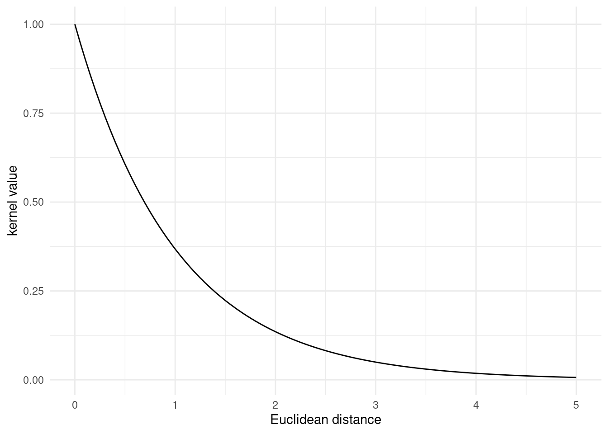
The Gaussian process yields functions which are prone to abrupt changes and thus look very rough.
plot_gp(exponential_kernel, l = 5)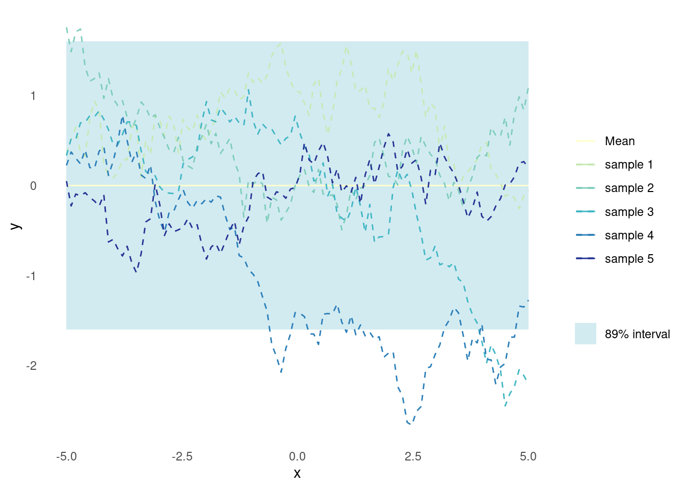
Matérn Kernel
The Matérn kernel is a flexible and versatile stationary kernel that can model a wide range of functions. The Matérn kernel is given by:
k(\mathbf{x},\mathbf{x'}) = \sigma^2\frac{2^{1-\nu}}{\Gamma(\nu)}\left(\frac{\sqrt{2\nu}\lVert\mathbf{x}-\mathbf{x'}\rVert}{l}\right)^{\nu} K_{\nu}\left(\frac{\sqrt{2\nu}\lVert\mathbf{x}-\mathbf{x'}\rVert}{l}\right)
where \sigma^2 is a variance parameter that scales the kernel, l is the length scale parameter, \nu is the smoothness parameter, \lVert\mathbf{x}-\mathbf{x'}\rVert is the Euclidean distance between the two vectors, \Gamma(\cdot) is the gamma function, and K_{\nu}(\cdot) is a modified Bessel function of the second kind with order \nu.
The RBF kernel yields smooth functions when applied in a Gaussian process, and the exponential kernel yields rugged functions. The Matérn kernel is a generalisation of the RBF kernel, where the parameter \nu controls the differentiability, and thus smoothness, of the kernel. In fact, setting \nu = 0.5 results in the exponential kernel and, as \nu \to \infty, the Matérn kernel converges to the RBF kernel.
The Matérn kernel is a popular choice for Gaussian processes, as it only makes very weak assumptions about the function being modelled. The length scale and smoothness parameters allow for modelling smooth functions with long-range covariance as well as functions with abrupt changes. The downside is that the kernel is very flexible and it takes data and effort to avoid overfitting.
Base R includes functions for the gamma function as well as a Bessel function of the second kind with given order, so it can be implemented without the need for additional libraries.
#' Matérn Kernel
#'
#' Isotropic Matérn kernel function generalised to two sets of n and m
#' observations of d features.
#'
#' @param X1 matrix of dimensions (n, d). Vectors are coerced to (1, d).
#' @param X2 matrix of dimensions (m, d). Vectors are coerced to (1, d).
#' @param sigma scale parameter, scalar
#' @param l length scale, scalar
#' @param nu smoothness parameter, positive scalar
#'
#' @return kernel matrix of dimensions (n, m)
matern_kernel <- function(X1, X2, sigma = 1, l = 1, nu = 2.5) {
if (is.null(dim(X1))) dim(X1) <- c(1, length(X1))
if (is.null(dim(X2))) dim(X2) <- c(1, length(X2))
distance <- (- 2*(X1 %*% t(X2))) %>%
add(rowSums(X1**2, dims = 1)) %>%
sweep(2, rowSums(X2**2, dims = 1), `+`) %>%
sqrt()
term <- sqrt(2 * nu) * distance / l
K <- sigma * (2^(1 - nu) / gamma(nu)) * (term^nu) * besselK(term, nu)
K[distance == 0] <- 1
K
}The kernel value looks like the RBF kernel or the exponential kernel, depending on the smoothness parameter
plot_kernel_value(matern_kernel, nu = 100)The Matérn kernel can yield functions that strike a balance between smoothness and flexibility
plot_gp(matern_kernel, nu = 1.5)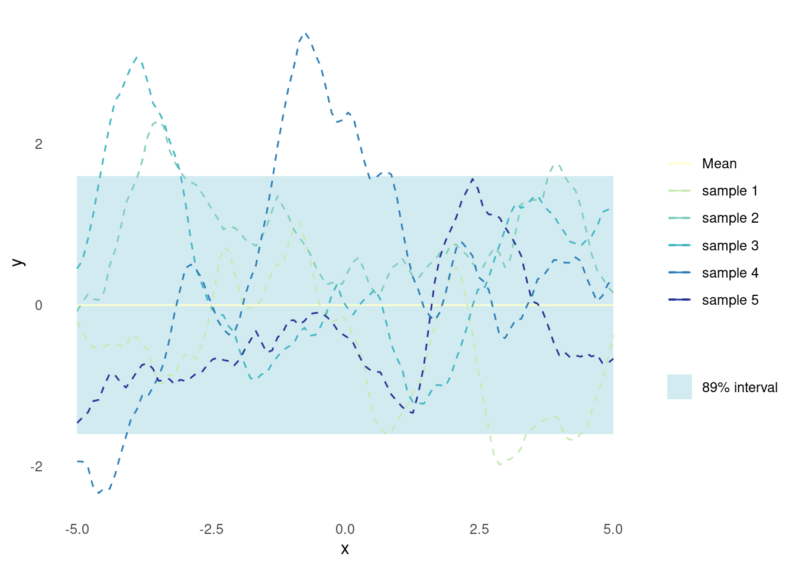
Periodic Kernels
Periodic kernels are a class of kernel functions that exhibit periodicity. Formally, a periodic kernel function k(\mathbf{x}, \mathbf{x'}) is periodic if and only if:
k(\mathbf{x}, \mathbf{x'}) = k(\mathbf{x}, \mathbf{x'}+n\omega)
for all inputs \mathbf{x} and \mathbf{x'} and all integers n, where \omega is the period of the kernel.
The Basic Periodic Kernel
The basic periodic kernel is a simple periodic kernel that can be used to model functions that exhibit periodic behaviour, i.e., functions that repeat their values in regular intervals. This is especially useful when dealing with time series data or spatial data that exhibit cyclical patterns. The kernel is derived from the RBF kernel with a transformation of the input to a periodic domain [1]. Consequently, the basic periodic kernel resembles the RBF kernel but with an additional trigonometric term that introduces periodicity. The definition is:
k(\mathbf{x}, \mathbf{x'}) = \exp \left( -\frac{2 \sin^2\left(\pi \frac{\lVert\mathbf{x}-\mathbf{x'}\rVert}{\omega}\right)}{l^2} \right)
Where \lVert\mathbf{x}-\mathbf{x'}\rVert is the Euclidean distance between the two vectors, \omega is the period, and l is the length scale.
#' Basic Periodic Kernel
#'
#' Isotropic basic periodic kernel function generalised to two sets of n and m
#' observations of d features.
#'
#' @param X1 matrix of dimensions (n, d). Vectors are coerced to (1, d).
#' @param X2 matrix of dimensions (m, d). Vectors are coerced to (1, d).
#' @param sigma scale parameter, scalar
#' @param l length scale, scalar
#' @param omega period parameter, scalar
#'
#' @return kernel matrix of dimensions (n, m)
periodic_kernel <- function(X1, X2, sigma = 1, l = 1, omega = 1) {
if (is.null(dim(X1))) dim(X1) <- c(1, length(X1))
if (is.null(dim(X2))) dim(X2) <- c(1, length(X2))
distance <- (- 2*(X1 %*% t(X2))) %>%
add(rowSums(X1**2, dims = 1)) %>%
sweep(2, rowSums(X2**2, dims = 1), `+`) %>%
sqrt()
sigma * exp(-2 * sin(pi * distance / omega)^2 / l^2)
}Plotting the basic periodic kernel function results in a periodic pattern with peaks and valleys, where the peaks occur when the inputs are multiples of the period, \omega apart. The covariance between input points is highest when the points are separated by multiples of the period length and decreases as the distance between the points deviates from multiples of the period.
plot_kernel_value(periodic_kernel, l = 0.5, omega = 1.5)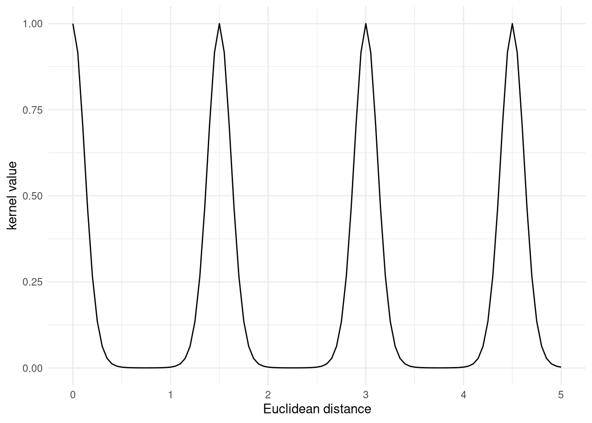
Sampled functions from a Gaussian process that utilises the basic periodic kernel exhibit periodic behaviour. Such functions, when plotted, appear as smooth, oscillating curves that repeat their patterns over regular intervals.
The properties of the basic periodic kernel, i.e. the period \omega and the length scale l, determine the characteristics of the sampled functions.
The period, \omega controls the distance between repetitions of the pattern in the sampled functions. A smaller period length will result in more frequent repetitions, while a larger period length will cause the repetitions to be spaced further apart.
The length scale, l, determines how smooth or wiggly the sampled functions are, just like it does for the RBF kernel. A smaller length scale will produce more wiggly functions, while a larger length scale will yield smoother functions with fewer oscillations within each period.
plot_gp(periodic_kernel, l = 1, omega = 2)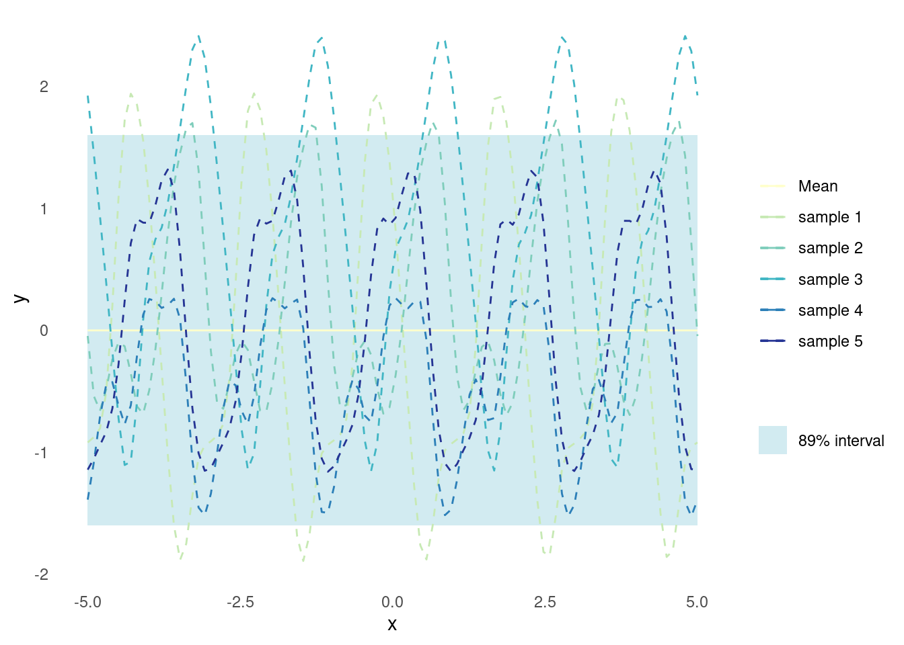
The basic periodic kernel alone cannot capture trends or non-periodic variations in the data, but can be combined with other kernels to create a very powerful model for objective functions with periodicity.
However, compared to simpler kernels, the basic periodic kernel has an additional hyperparameter, the period parameter \omega, that needs to be tuned. The choice of period can have a significant impact on the model performance, and finding an appropriate value can be challenging. As with any periodic kernel, applying the basic periodic kernel comes with the assumption that the underlying objective function being modelled exhibits periodic behaviour. If the assumption does not hold true, applying this kernel could be detrimental.
Locally Periodic Kernel
An example of the basic periodic kernel working in tandem with a non-periodic kernel is the locally periodic kernel, which is the product of the basic periodic kernel and the RBF kernel.
k(\mathbf{x}, \mathbf{x'}) = \sigma^2\exp \left( -\frac{2 \sin^2\left(\pi \frac{\lVert\mathbf{x}-\mathbf{x'}\rVert}{\omega}\right)}{l_p^2} \right) \exp \left( -\frac{\lVert\mathbf{x}-\mathbf{x'}\rVert^2}{2 l_v^2} \right)
#' Locally Periodic Kernel
#'
#' Isotropic locally periodic kernel function generalised to two sets of n and m
#' observations of d features.
#'
#' @param X1 matrix of dimensions (n, d). Vectors are coerced to (1, d).
#' @param X2 matrix of dimensions (m, d). Vectors are coerced to (1, d).
#' @param sigma scale parameter, scalar
#' @param l_period length scale for periodicity, scalar
#' @param l_var length scale for stationary variance, scalar
#' @param omega period parameter, scalar
#'
#' @return kernel matrix of dimensions (n, m)
locally_periodic_kernel <- function(X1,
X2,
sigma = 1,
l_period = 1,
l_var = 1,
omega = 1) {
periodic_kernel(X1, X2, l = l_period, omega = omega, sigma = sigma) *
rbf_kernel(X1, X2, l = l_period, sigma = 1)
}Plotting the locally periodic kernel results a series of peaks, reflecting the periodic behaviour captured by the periodic kernel. The peaks are highest when the Euclidean distance between the input vectors is a multiple of the period length. The periodic effect is dampened over longer distances due to the length scaling of the RBF kernel.
plot_kernel_value(locally_periodic_kernel, omega = 0.5)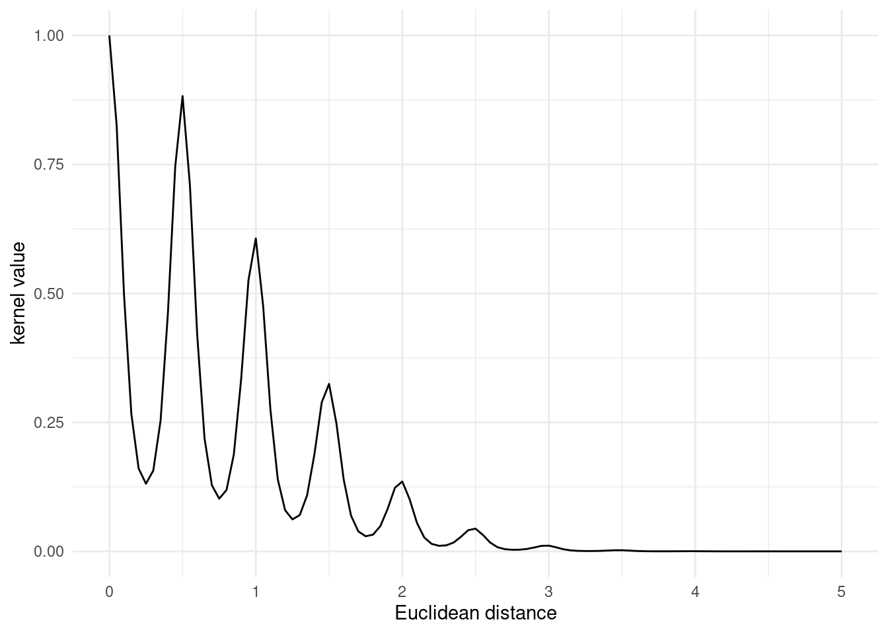
Sample functions from a Gaussian process that utilises the locally periodic kernel exhibit both periodic behaviour and local variations. The functions appear as smooth, oscillating curves that repeat their patterns over regular intervals, but with varying amplitude and local changes.
plot_gp(locally_periodic_kernel, omega = 0.5)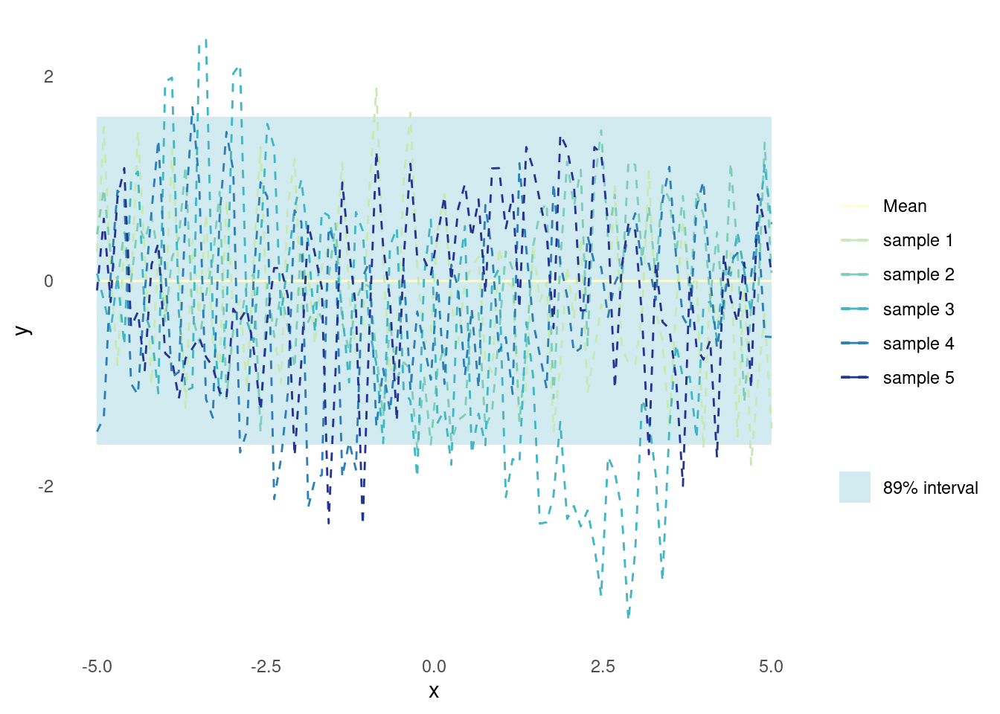
The locally periodic kernel could be combined with other non-periodic kernels like the Matérn kernel to create even more complex dynamics. However, applying a periodic kernel comes with the assumption that the underlying objective function being modelled exhibits periodic behaviour. If the assumption does not hold true, applying a periodic kernel could be detrimental.
Non-stationary Kernels
Unlike stationary kernels, non-stationary kernels can depend on the absolute values of their inputs.
Non-stationary kernels are often used when the underlying function being modelled exhibits varying behaviour or has different characteristics in different regions of feature space. For example, if the function being modelled changes rapidly in some regions and slowly in others, a non-stationary kernel may be more appropriate than a stationary kernel.
Linear Kernel
The linear kernel, also known as the dot product kernel, is a simple non-stationary kernel function. It is defined as
k(\mathbf{x}, \mathbf{x'}) = \mathbf{x}^T \mathbf{x'} + \sigma^2
Where \sigma is a constant. When sigma = 0 the kernel is called homogeneous and inhomogeneous otherwise.
The linear kernel can be applied in cases when linear behaviour is expected. If the value of the modelled function is expected to grow as a function of the distance from an origin, a linear kernel might be appropriate.
#' Linear Kernel
#'
#' Linear kernel function generalised to two sets of n and m observations of d
#' features.
#'
#' @param X1 matrix of dimensions (n, d). Vectors are coerced to (1, d).
#' @param X2 matrix of dimensions (m, d). Vectors are coerced to (1, d).
#' @param sigma homogeneity parameter, scalar
#'
#' @return kernel matrix of dimensions (n, m)
linear_kernel <- function(X1, X2, sigma = 0) {
if (is.null(dim(X1))) dim(X1) <- c(1, length(X1))
if (is.null(dim(X2))) dim(X2) <- c(1, length(X2))
sigma^2 + X1 %*% t(X2)
}Sampled functions from a Gaussian process that utilises the linear kernel exhibit linear behaviour. These sampled functions, appear as straight lines with varying slopes and intercepts. Indeed, applying a Gaussian process with a linear kernel to data is equivalent to doing Bayesian linear regression.
plot_gp(linear_kernel)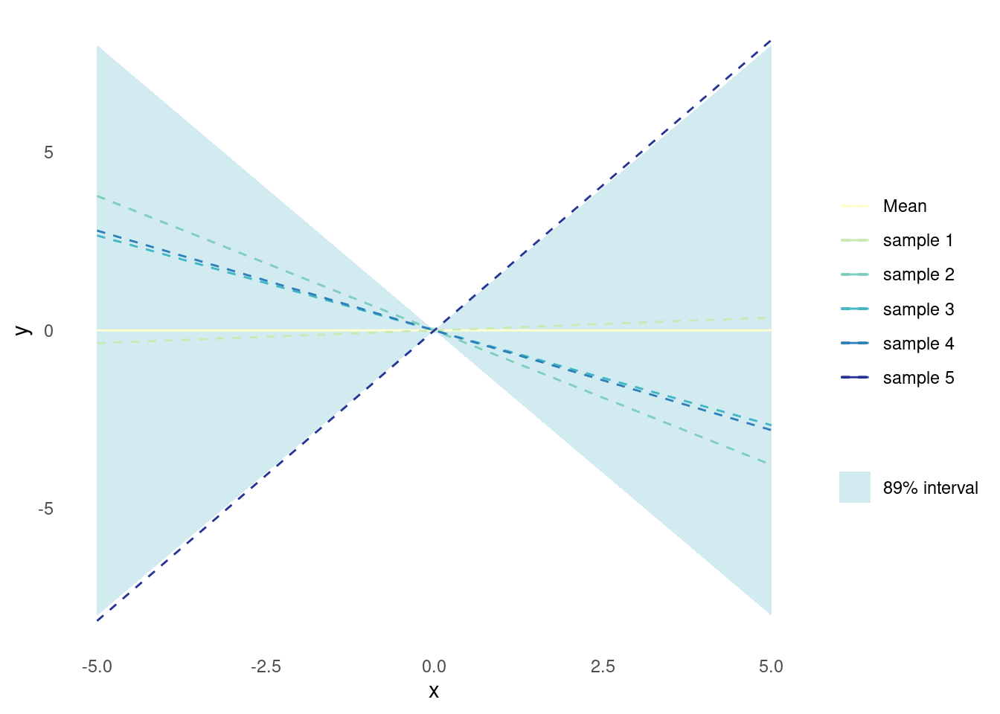
Since this kernel captures linear patterns in the data, the sampled functions will always be straight lines and will not be able to model other types of variation. However, it can be combined with other kernels to increase its utility.
Polynomial Kernel
The polynomial kernel is a generalisation of the linear kernel and is defined as
K(\mathbf{x}, \mathbf{x'}) = (\mathbf{x}^T \mathbf{x'} + \sigma^2)^{\nu}
Where \sigma is a constant that determines the shape of the kernel function and \nu, a positive integer, is the degree of the polynomial. When sigma = 0 the kernel is called homogeneous and inhomogeneous otherwise.
#' Polynomial Kernel
#'
#' Polynomial kernel function generalised to two sets of n and m observations of
#' d features.
#'
#' @param X1 matrix of dimensions (n, d). Vectors are coerced to (1, d).
#' @param X2 matrix of dimensions (m, d). Vectors are coerced to (1, d).
#' @param sigma homogeneity parameter, scalar
#' @param nu degree parameter, positive integer
#'
#' @return kernel matrix of dimensions (n, m)
polynomial_kernel <- function(X1, X2, sigma = 0, nu = 2) {
if (is.null(dim(X1))) dim(X1) <- c(1, length(X1))
if (is.null(dim(X2))) dim(X2) <- c(1, length(X2))
(sigma + X1 %*% t(X2))^nu
}Sampled functions from a Gaussian process that utilises the polynomial kernel will exhibit polynomial behaviour. The functions appear as smooth curves with varying shapes, depending on the degree and the parameters of the polynomial kernel. When \nu = 2, the functions are parabolas.
plot_gp(polynomial_kernel, sigma = 1, nu = 2)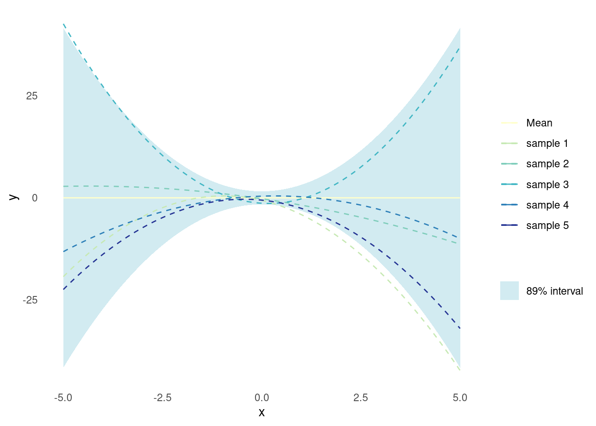
Applying a Gaussian process with the polynomial kernel corresponds to doing Bayesian polynomial regression. This means that the kernel can be applied to model non-linear relationships, but it will also be subject to the same constraints and overfitting challenges of regular polynomial regression.
Other Kernels
Constant Kernel
The constant kernel, also known as the bias kernel, is a simple kernel defined as
k(\mathbf{x}, \mathbf{x'}) = c
where c is a constant value.
The constant kernel is characterised by its simplicity, as it assumes a constant value, meaning the output is the same for all input points. The constant kernel can be combined with other kernels to model more complex relationships between data points. In Gaussian process regression, this kernel can capture constant offsets in the function being modelled.
#' Constant Kernel
#'
#' Constant kernel function generalised to two sets of n and m observations of d
#' features.
#'
#' @param X1 matrix of dimensions (n, d). Vectors are coerced to (1, d).
#' @param X2 matrix of dimensions (m, d). Vectors are coerced to (1, d).
#' @param c kernel value, scalar
#'
#' @return kernel matrix of dimensions (n, m)
constant_kernel <- function(X1, X2, c = 1) {
if (is.null(dim(X1))) dim(X1) <- c(1, length(X1))
if (is.null(dim(X2))) dim(X2) <- c(1, length(X2))
matrix(c, dim(X1)[[1]], dim(X2)[[1]])
}The constant kernel function is just a flat, two-dimensional surface parallel to the input space. The height of the surface is equal to the constant value c.
plot_kernel_value(constant_kernel)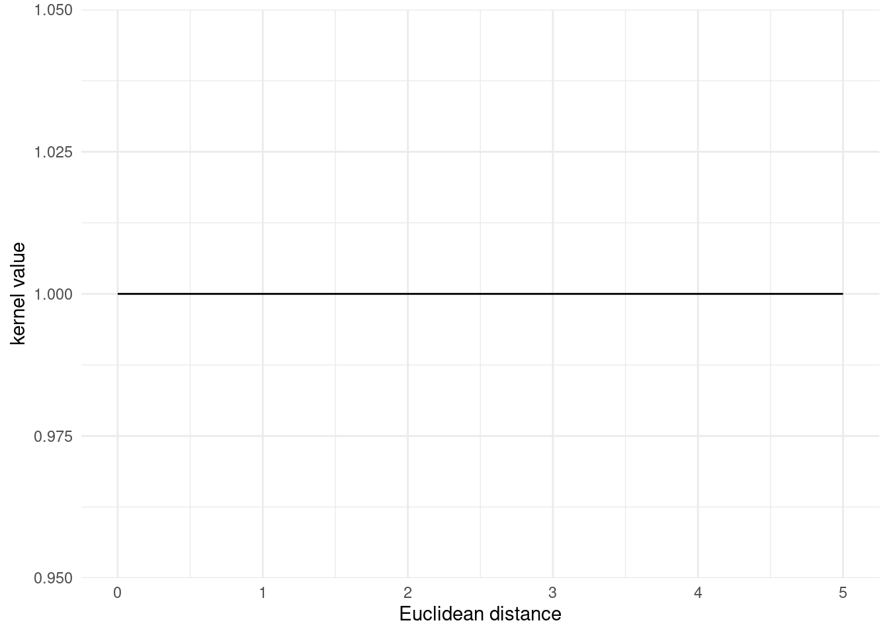
Sampled functions from a Gaussian process that utilises the constant kernel are just constant functions. The functions are flat, horizontal lines parallel to the x-axis. There is still variance - each function has a different constant value, determined by the variance specified by the kernel. If the Gaussian process has a zero mean function, the sampled functions will be horizontal lines with y-values centred around zero, and their heights will be determined by the constant kernel value according to y = \beta where \beta \sim \mathcal{N}(0, c^2).
plot_gp(constant_kernel)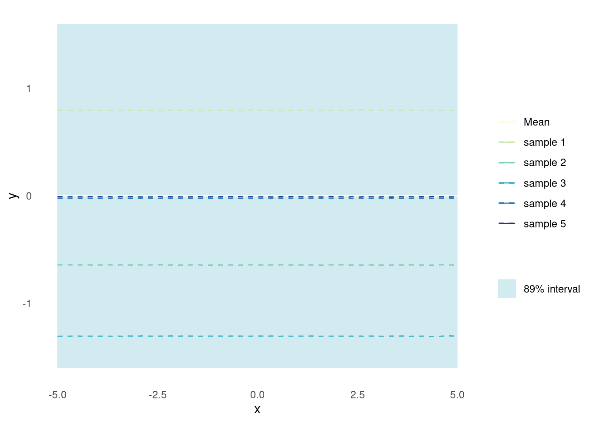
White Noise Kernel
The white noise kernel is also known as the Kronecker Delta Kernel because its definition utilises the Kronecker delta function:
k(\mathbf{x}, \mathbf{x'}) = \sigma^2\delta_{\mathbf{x}, \mathbf{x'}}
In other words, when the input vectors are exactly the same there is noise, \sigma, otherwise the kernel is zero.
#' White Noise Kernel
#'
#' White noise kernel function generalised to two sets of n and m observations
#' of d features.
#'
#' @param X1 matrix of dimensions (n, d). Vectors are coerced to (1, d).
#' @param X2 matrix of dimensions (m, d). Vectors are coerced to (1, d).
#' @param sigma noise parameter, positive scalar
#'
#' @return kernel matrix of dimensions (n, m)
white_noise_kernel <- function(X1, X2, sigma = 1) {
if (is.null(dim(X1))) dim(X1) <- c(1, length(X1))
if (is.null(dim(X2))) dim(X2) <- c(1, length(X2))
k <- matrix(0, dim(X1)[[1]], dim(X2)[[1]])
diag(k) <- 1
k * sigma^2
}Samples pulled from a Gaussian processes that utilises just the white noise kernel are nothing but white noise.
plot_gp(white_noise_kernel)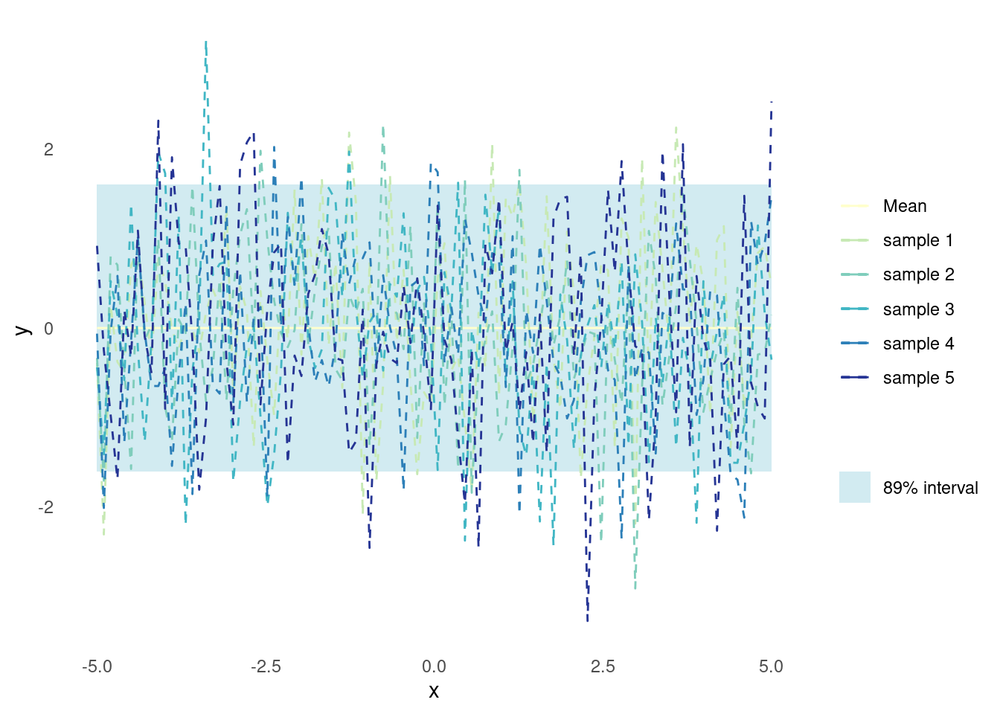
The white noise kernel alone cannot capture the underlying signal of the function being modelled. However, it can be used in combination with other kernels. Specifically, the white noise kernel models the case where observations have white, i.e. Gaussian, noise but the magnitude of the noise is unknown.
Anisotropic Kernels
Anisotropic kernels allow for different length scales in different dimensions of feature space. This is in opposition to the isotropic kernels described above, with a single length scale across all dimensions. Intuitively, the anisotropic kernel is stretched or compressed in certain directions compared to its isotropic counterpart. This property can be useful when the input variables have different units or scales.
The anisotropy of a kernel is controlled by several length scale parameters, which specify the length scaling along each dimension in feature space. The use of anisotropic kernels can improve the predictive accuracy of Gaussian process models when the input variables have different levels of variability or when the correlations between variables vary in different directions. However, anisotropic kernels also increase the complexity of the model because of the added parameters.
Formally, an anisotropic kernel can be constructed from an isotropic stationary kernel by substituting the distance part of the definition, i.e. \lVert\mathbf{x}-\mathbf{x'}\rVert^2/l^2, with (\mathbf{x}-\mathbf{x'})\mathbf{M}(\mathbf{x}-\mathbf{x'})^T where \mathbf{M} is a (D×D) matrix. There are different options for constructing \mathbf{M}. A diagonal matrix \mathbf{M} = l^{-2}\mathbf{I} where l is a scalar, would correspond to the isotropic kernel. A diagonal matrix \mathbf{M} = \mathrm{diag}(\mathbf{l})^{-2}, where \mathbf{l} is a vector of length D of length scales, would correspond to different length scales for each dimension. There are other options for \mathbf{M} as well. See chapter 5 of [2].
Anisotropic RBF Kernel
The anisotropic RBF kernel expands the isotropic RBF kernel to allow for individual length scaling of input dimensions. It is defined by
k(\mathbf{x}, \mathbf{x'}) = \sigma^2 \exp\left(-\frac{1}{2}(\mathbf{x}-\mathbf{x'})\mathbf{M}(\mathbf{x}-\mathbf{x'})^T\right)
Where \sigma^2 is a variance parameter that simply scales the kernel and \mathbf{M} is a (D×D) matrix that controls the length scaling of the D input dimensions. \mathbf{M} is often constructed from a length scale scalar, l, or length scale vector \mathbf{l}, see examples below.
#' Anisotropic RBF Kernel
#'
#' @param X1 matrix of dimensions (n, d). Vectors are coerced to (1, d).
#' @param X2 matrix of dimensions (m, d). Vectors are coerced to (1, d).
#' @param sigma scale parameter
#' @param l length scale.
#' A vector of size 1 yields the isotropic kernel.
#' A vector of size d yields the anisotropic kernel with individual length
#' scales for each dimension.
#' A matrix of size (d, d) allows for fine-grained control of length scaling.
#'
#' @return matrix of dimensions (n, m)
anisotropic_rbf_kernel <- function(X1, X2, sigma = 1.0, l = 1.0) {
if (is.null(dim(X1))) dim(X1) <- c(1, length(X1))
if (is.null(dim(X2))) dim(X2) <- c(1, length(X2))
d <- dim(X1)[[2]]
if (is.null(dim(l)) && length(l) == 1) M <- diag(d) * l^(-2)
if (is.null(dim(l)) && length(l) == d) M <- diag(l^(-2))
if (length(dim(l)) == 2 && dim(l)[[1]] == d && dim(l)[[2]] == d) M <- l
if (is.null(M)) stop("Dimensions of length scale are not compatible.")
lX1 <- X1 %*% M
lX2 <- X2 %*% M
sqdist <- (- 2*(lX1 %*% t(lX2))) %>%
add(rowSums(lX1**2, dims = 1)) %>%
sweep(2, rowSums(lX2**2, dims = 1), `+`)
sigma**2 * exp(-0.5 * sqdist)
}When \mathbf{M} is a diagonal matrix
\mathbf{M} = l^{-2}\mathbf{I}
Where l is a length scale scalar, the kernel is isotropic and the kernel response is exactly identical to the one described above for the RBF kernel.
# A scalar l actually yields the isotropic RBF kernel
plot_kernel_value(anisotropic_rbf_kernel, l = 1.0)The scaling is the same in all dimensions. Here is an example in 2D
# Prepare a 2D grid
X1 <- as.matrix(expand.grid(d1 = seq(-5, 5, 0.1), d2 = seq(-5, 5, 0.1)))
X2 <- matrix(0, 1, dim(X1)[[2]])K <- anisotropic_rbf_kernel(X1, X2, l = 1.0)
tibble::as_tibble(X1) %>%
dplyr::mutate(k = K) %>%
ggplot() +
geom_contour_filled(aes(x = d1, y = d2, z = k), alpha = 0.8) +
labs(
x = "Distance in 1st dimension",
y = "Distance in 2nd dimension",
fill = "Kernel value"
) +
theme_minimal()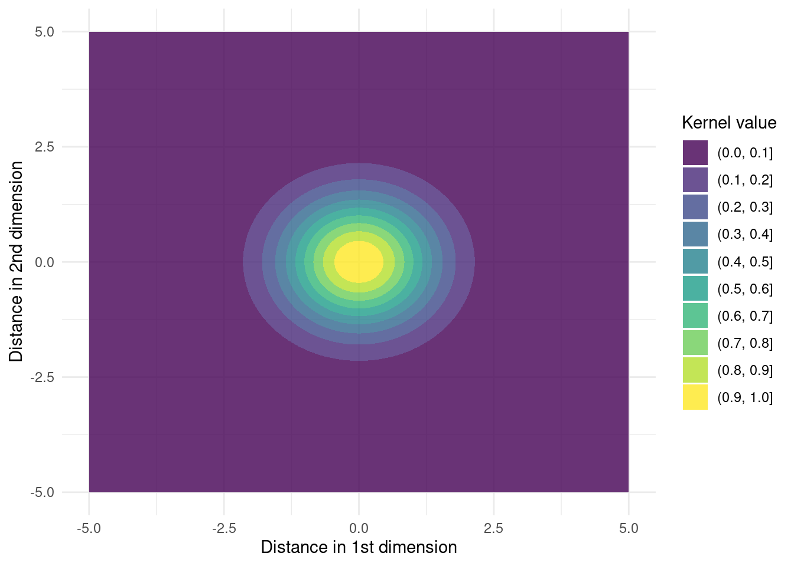
When \mathbf{M} is a diagonal matrix
\mathbf{M} = \mathrm{diag}(\mathbf{l})^{-2}
where \mathbf{l} is a length scale vector, the kernel is anisotropic and has a separate length scale for each dimension. This effectively stretches or compresses each dimension. Here is an example in 2D of differing length scales
K <- anisotropic_rbf_kernel(X1, X2, l = c(2.5, 1))
tibble::as_tibble(X1) %>%
dplyr::mutate(k = K) %>%
ggplot() +
geom_contour_filled(aes(x = d1, y = d2, z = k), alpha = 0.8) +
labs(
x = "Distance in 1st dimension",
y = "Distance in 2nd dimension",
fill = "Kernel value"
) +
theme_minimal()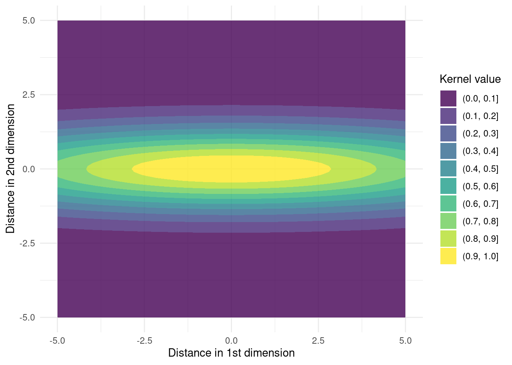
Since the first dimension has a larger length scale than the second dimension, the kernel value gets stretched in the first dimension.
When the length scales of the anisotropic kernel are fitted rather than given, they can sometimes be used for determining feature relevance. An infinitely large length scale corresponds to a dimension with no variation and thus an irrelevant feature. On the other hand, a smaller length scale could indicate a feature with large variation and influence on the model. The inverse of the length scale is thus sometimes used to indicate feature relevance and the process is known as Automatic Relevance Determination (ARD). However, context is important for proper interpretation of fitted length scales. Specifically, the length scales also depend on the unit of each feature and tend to be biased towards non-linear features [3].
When \mathbf{M} has non-zero values outside the diagonal, the kernel is stretched and rotated. Here is an example of a rotated kernel
K <- anisotropic_rbf_kernel(X1, X2, l = matrix(c(1, 1, 1, 2), 2, 2))
tibble::as_tibble(X1) %>%
dplyr::mutate(k = K) %>%
ggplot() +
geom_contour_filled(aes(x = d1, y = d2, z = k), alpha = 0.8) +
labs(
x = "Distance in 1st dimension",
y = "Distance in 2nd dimension",
fill = "Kernel value"
) +
theme_minimal()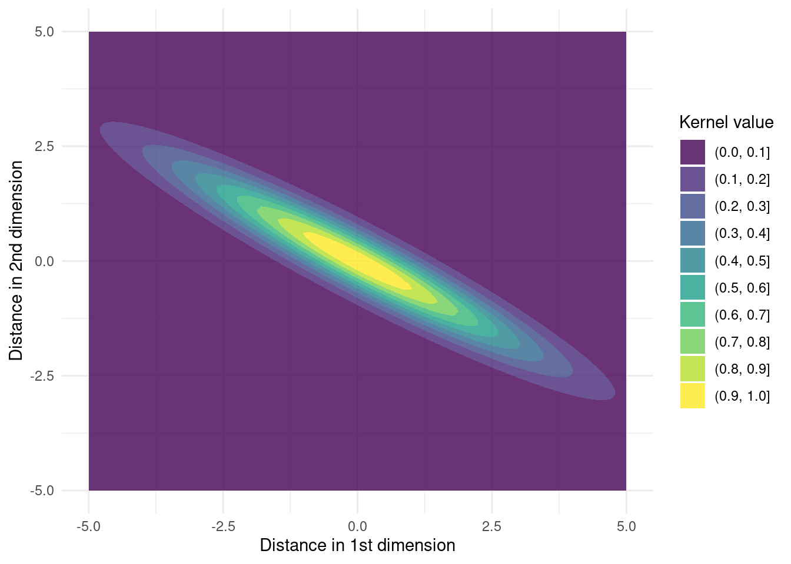
This property can be used to create a rotation that effectively reduces the dimensionality of the input features.
Combining Kernels
Kernels can be combined to create new kernels with more flexibility or sophisticated dynamics. The successful application of Gaussian processes relies on choosing a kernel that can model the target function and combining different types of kernels provides a major means of creating a good kernel for the Gaussian process.
There are two main ways kernels are combined: combining multiple kernels on each feature or using different kernels for different features.
Creating new kernels from existing kernels
A new kernel can be created from existing kernels in multiple ways.
Summation
Two or more kernels can be added together to create a new kernel that captures the features of both. Two kernels k_1(\mathbf{x},\mathbf{x'}) and k_2(\mathbf{x},\mathbf{x'}), can be combined as
k_{sum}(\mathbf{x},\mathbf{x'}) = k_1(\mathbf{x},\mathbf{x'}) + k_2(\mathbf{x},\mathbf{x'})
The resulting kernel will assign high covariance to pairs of points that are similar in either k_1 or k_2. I.e. the inputs \mathbf{x} and \mathbf{x'} only need to have a high covariance according to one kernel to return a high covariance for the combined kernel, when the kernels are added together.
Product
Two or more kernels can be multiplied together to create a new kernel that captures the features of both. Two kernels K_1(\mathbf{x},\mathbf{x'}) and K_2(\mathbf{x},\mathbf{x'}), can be combined as
K_{sum}(\mathbf{x},\mathbf{x'}) = K_1(\mathbf{x},\mathbf{x'})K_2(\mathbf{x},\mathbf{x'}) The resulting kernel will assign high values to pairs of points that are similar in both k_1 and k_2. I.e. the inputs \mathbf{x} and \mathbf{x'} need to have a high covariance according to both kernels to return a high covariance for the combined kernel, when the kernels are multiplied. The locally periodic kernel, as described above, is an example of a periodic kernel combined with a stationary kernel by multiplication.
As a consequence of this rule, any kernel can also be raised to a power of a positive integer and still be a valid kernel. For instance, the polynomial kernel can be viewed as the product of \nu linear kernels.
Other Methods
The sum and product rules can also be combined. Along with the fact that the constant kernel is a valid kernel, one can effectively create a weighed sum of kernels.
k_{sum}(\mathbf{x},\mathbf{x'}) = w_1k_1(\mathbf{x},\mathbf{x'}) + w_2k_2(\mathbf{x},\mathbf{x'})
Where w_1 and w_2 are weights.
Two or more kernels can also be combined through convolution and yield a valid kernel [2].
Different Kernels for Different Dimensions
Using different kernels across different dimensions is often the right thing to, as it allows for a more accurate representation of prior knowledge of the modelled process.
Specifically, when the input features have different properties or units, different kernels might be appropriate. For example, a dimension representing time might benefit from a periodic kernel and another another representing temperature might best be represented with a stationary kernel. Using a separate kernel for each dimension can help capture the distinct behaviours and scales of the two features. It is also easy to imagine a real-world problem where the gathered data includes a mix of different data types, such as continuous, discrete, or categorical. By applying the right type of kernel to each type of feature, all features can be included in the same Gaussian process.
Imagine the situation where there are two different types of features, \mathbf{x}_a and \mathbf{x}_b. These could be a set of continuous features and a set of categorical features. On the first set of features, one kernel is applied, i.e., k_a(\mathbf{x}_a,\mathbf{x'}_a). On the other set of features another kernel is applied, i.e., k_b(\mathbf{x}_b,\mathbf{x'}_b). The two kernel values can be combined by multiplication
k(\mathbf{x}_a, \mathbf{x}_b, \mathbf{x'}_a, \mathbf{x'}_b) = k_a(\mathbf{x}_b,\mathbf{x'}_b)k_b(\mathbf{x}_b,\mathbf{x'}_b)
This scales to many feature sets, so it is possible to have a separate kernel for each feature.
References
License
The content of this project itself is licensed under the Creative Commons Attribution-ShareAlike 4.0 International license, and the underlying code is licensed under the GNU General Public License v3.0 license.
Anders E. Nielsen
Data Professional & Research Scientist
I apply modern data technology to solve real-world problems. My interests include statistics, machine learning, computational biology, and IoT.